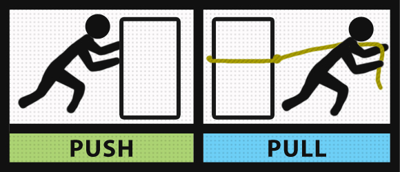

Functional Reactive Programming
with JavaScript
André Werlang (@awerlang)
Motivation
- Decoupling
- Composition
- Asynchronous workflows
- Vocabulary
Ways to Innovate
- Platforms
- Languages
- Libraries
- Techniques
- Tools
Attempts
Callbacks
- Just pass in a function
- It can be synchronous...
- ...but probably not
- ...which leads to terrible coding style
Promises
- ES2015
- Abstraction around a single value
- All or nothing, there's no progress indication
- Does not provide for cancelling
Async/await
- Designed on top of promises
- Async functions ES stage 3
- Async iterators ES stage 1
Generators
- ES2015
- Synchronous
- Enforces an imperative-style
To Sum Up

Push & Pull
One Pattern To Rule Them All
Functional ? Reactive Programming

What does that mean?
x = f(y) + g(x')
Reactive programming is programming with asynchronous data streams.
Values that change over time
Streams
- Ongoing events
- Emits values to subscribers...
- ...until it completes
- ...or it signals an error
Streams: sources
- Interactive events: mouse and keyboard input, timers
- File system
- Web service requests
A Functional Flavour
- Encapsulate low-level events into higher-level constructs
- No visible mutation
- First-class stream objects
- Infinite, lazy evaluation
- Reusable
Concepts


Characteristics
- Chain operators
- Multiple subscribers
- Retries on error signal
Operators
map
scan
debounce
combineLatest
merge
zip
race
filter
distinct
pausable
One example
Typeahead
Whenever user types into a textbox, display a list of suggestions, but only if:
- Text length is greater than 2 characters
- User stopped typing for longer than 500ms
- Text had actually been changed
Which event we're talking about?
The event `UserChangedTextLongerThan2CharactersAbout500msAgo`
When this event happens, make the request.
(and cancel any pending requests...)
One solution
const inputChanged = Observable.fromEvent(inputElement, 'input')
.map(ev => ev.target.value)
.filter(text => text.length > 2)
.debounceTime(500)
.distinctUntilChanged();
const newSuggestionsArrived = inputChanged
.switchMap(q => Observable.ajax.getJSON('search?term=' + q));
newSuggestionsArrived.subscribe(data => {
suggestionsElement.innerHTML = data.map(it => `${it} `)
.join('');
});
Cold, Hot Observables
- HOT: emits whether you're ready or not
- COLD: emits when requested
Visualizing
Implementations

Future
- Observable ES stage 1
- Share a common push-based stream protocol